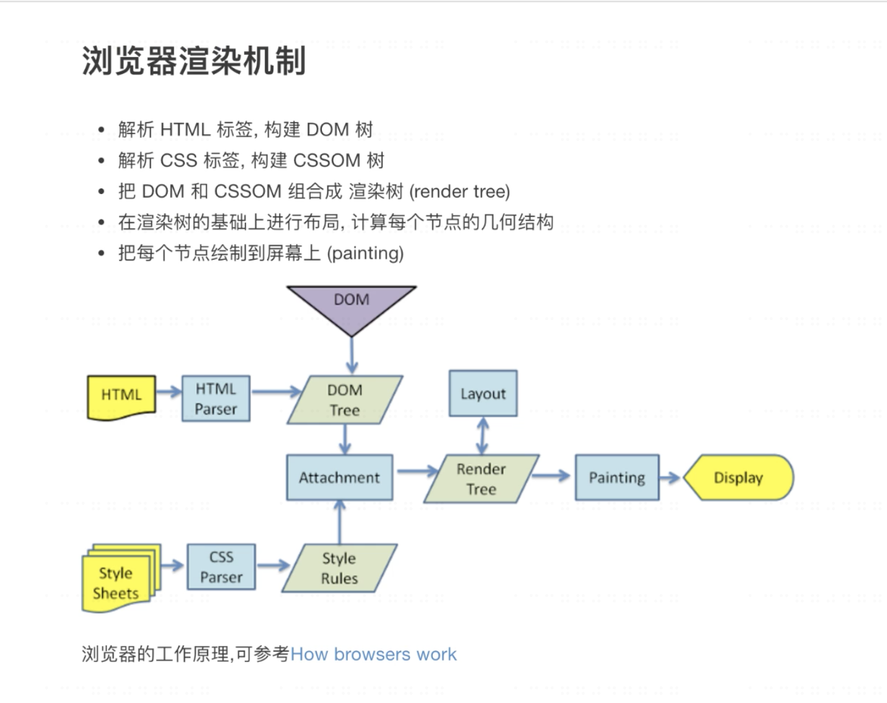
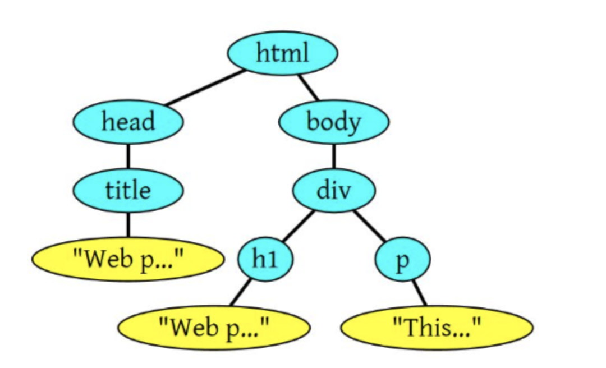
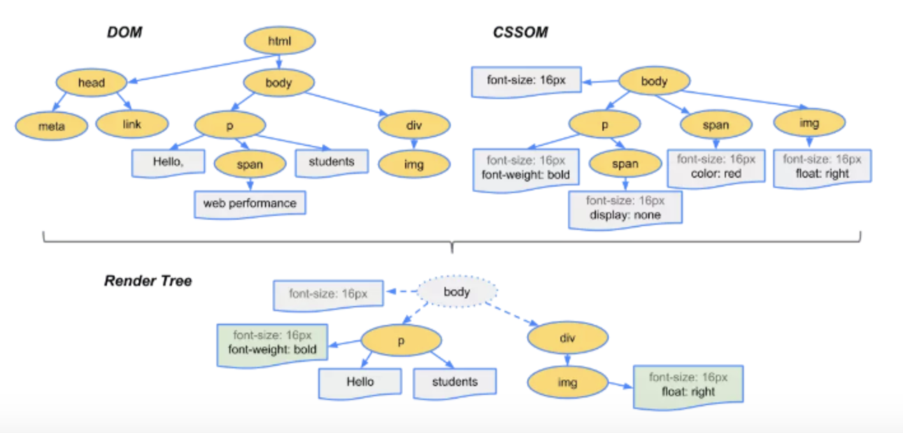

前言
浏览器的内核是指支持浏览器运行的最核心的程序，分为两个部分的，一是渲染引擎，另一个是JS引擎。渲染引擎在不同的浏览器中也不是都相同的。比如在 Firefox 中叫做 Gecko，在 Chrome 和 Safari 中都是基于 WebKit 开发的。
浏览器渲染步骤

浏览器工作流程大体分为如下部分：
1.解析HTML标签，构建DOM树
浏览器会遵守一套步骤将HTML 文件转换为 DOM 树。宏观上，可以分为几个步骤：
字节数据 => 字符串 => Token => Node => DOM
比如1
2
3
4
5
6
7
8
9
10
11<html>
<head>
<title>Web page parsing</title>
</head>
<body>
<div>
<h1>Web page parsing</h1>
<p>This is an example Web page.</p>
</div>
</body>
</html>
上面这段HTML会解析成这样：

2.解析CSS标签，构建CSSOM树
DOM会捕获页面的内容，但浏览器还需要知道页面如何展示，所以需要构建CSSOM。
构建CSSOM的过程与构建DOM的过程非常相似，当浏览器接收到一段CSS，浏览器首先要做的是识别出Token，然后构建节点并生成CSSOM。
字节数据 => 字符串 => Token => Node => CSSOM
3.把DOM和CSSOM组合成渲染树（reder tree）
当我们生成 DOM 树和 CSSOM 树以后，就需要将这两棵树组合为渲染树。然后在渲染树的基础上进行布局，计算每个节点的几何结构

4. 把每个节点绘制到屏幕上（painting）
当浏览器生成渲染树以后，就会根据渲染树来进行布局（也可以叫做回流）。
这一阶段浏览器要做的事情是要弄清楚各个节点在页面中的确切位置和大小。通常这一行为也被称为“自动重排”。
布局流程的输出是一个“盒模型”，它会精确地捕获每个元素在视口内的确切位置和尺寸，所有相对测量值都将转换为屏幕上的绝对像素。
布局完成后，浏览器会立即发出“Paint Setup”和“Paint”事件，将渲染树转换成屏幕上的像素。
关于JS渲染
JavaScript的加载、解析与执行会阻塞DOM的构建，也就是说，在构建DOM时，HTML解析器若遇到了JavaScript，那么它会暂停构建DOM，将控制权移交给JavaScript引擎，等JavaScript引擎运行完毕，浏览器再从中断的地方恢复DOM构建。
也就是说，如果你想首屏渲染的越快，就越不应该在首屏就加载 JS 文件，这也是都建议将 script 标签放在 body 标签底部的原因。当然在当下，并不是说 script 标签必须放在底部，因为你可以给 script 标签添加 defer 或者 async 属性
JS文件不只是阻塞DOM的构建，它会导致CSSOM也阻塞DOM的构建。
因为JavaScript不只是可以改DOM，它还可以更改样式，也就是它可以更改CSSOM
原本DOM和CSSOM的构建是互不影响，井水不犯河水，但是一旦引入了JavaScript，CSSOM也开始阻塞DOM的构建，只有CSSOM构建完毕后，DOM再恢复DOM构建。
关于回流和重绘
我们知道，当网页生成的时候，至少会渲染一次。在用户访问的过程中，还会不断重新渲染。重新渲染会重复上图中的第四步(回流)+第五步(重绘)或者只有第五个步(重绘)。
- repaint：重绘
页面元素不发生位置的变化，不需要重新计算所有元素的位置。比如说改变DOM的颜色等 reflow： 回流
当我们增加，删除更新DOM元素的时候，元素自身位置发生变化，导致其余的元素位置也发生变化，导致页面必须重新计算的现象称为回流
比如- 添加或者删除可见的DOM元素；
- 元素尺寸改变——边距、填充、边框、宽度和高度
- 内容变化，比如用户在input框中输入文字
- 浏览器窗口尺寸改变——resize事件发生时
- 计算 offsetWidth 和 offsetHeight 属性
- 设置 style 属性的值
重绘和回流会在我们设置节点样式时频繁出现，同时也会很大程度上影响性能。回流所需的成本比重绘高的多，改变父节点里的子节点很可能会导致父节点的一系列回流。
async和defer的作用是什么
没有 defer 或 async，浏览器会立即加载并执行指定的脚本，也就是说不等待后续载入的文档元素，读到就加载并执行。
(异步下载)
async 属性表示异步执行引入的 JavaScript，与 defer 的区别在于，如果已经加载好，就会开始执行——无论此刻是 HTML 解析阶段还是 DOMContentLoaded 触发之后。
(延迟执行)
defer 属性表示延迟执行引入的 JavaScript，即这段 JavaScript 加载时 HTML 并未停止解析，这两个过程是并行的。整个 document 解析完毕且 defer-script 也加载完成之后（这两件事情的顺序无关），会执行所有由 defer-script 加载的 JavaScript 代码，然后触发 DOMContentLoaded 事件。
defer 与相比普通 script，有两点区别：载入 JavaScript 文件时不阻塞 HTML 的解析，执行阶段被放到 HTML 标签解析完成之后。在加载多个JS脚本的时候，async是无顺序的加载，而defer是有顺序的加载。
关于白屏和 FOUC
由于浏览器的渲染机制不同，在渲染页面时会出现两种常见的不良现象—-白屏问题和FOUS（无样式内容闪烁）
FOUC：
由于浏览器渲染机制（比如firefox），再CSS加载之前，先呈现了HTML，就会导致展示出无样式内容，然后样式突然呈现的现象；白屏：
有些浏览器渲染机制（比如chrome）要先构建DOM树和CSSOM树，构建完成后再进行渲染，如果CSS部分放在HTML尾部，由于CSS未加载完成，浏览器迟迟未渲染，从而导致白屏；也可能是把js文件放在头部，脚本会阻塞后面内容的呈现，脚本会阻塞其后组件的下载，出现白屏问题。
总结
浏览器工作流程：构建DOM -> 构建CSSOM -> 构建渲染树 -> 布局 -> 绘制。
CSSOM会阻塞渲染，只有当CSSOM构建完毕后才会进入下一个阶段构建渲染树。
通常情况下DOM和CSSOM是并行构建的，但是当浏览器遇到一个script标签时，DOM构建将暂停，直至脚本完成执行。但由于JavaScript可以修改CSSOM，所以需要等CSSOM构建完毕后再执行JS。
如果你想首屏渲染的越快，就越不应该在首屏就加载 JS 文件，建议将 script 标签放在 body 标签底部。